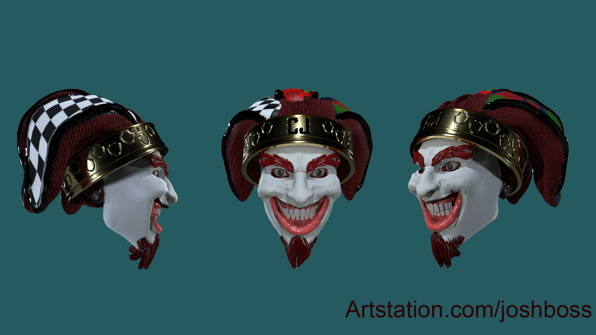
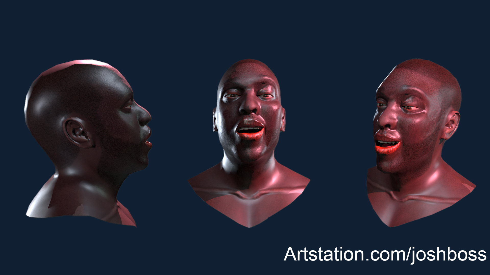
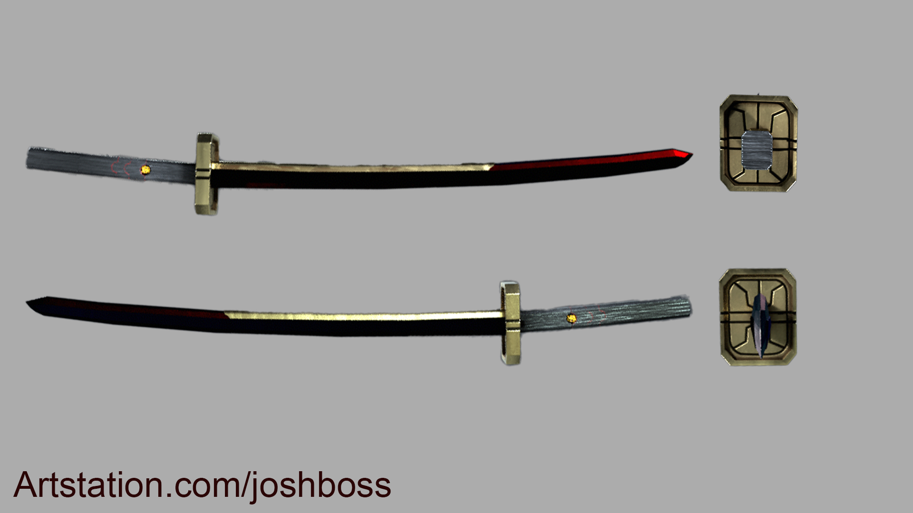
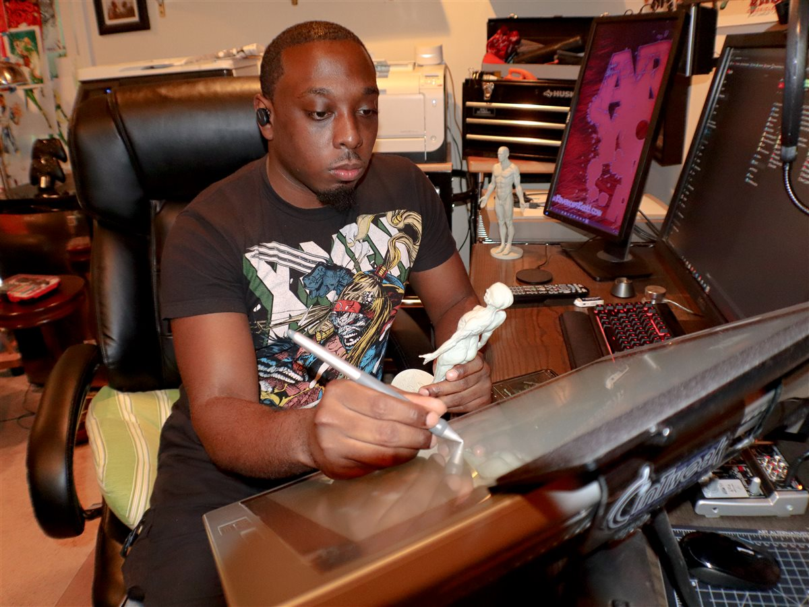

Brooklyn, NY · Available for hire
Character Artist
Stylized & Realistic
ZBrush · Substance Painter · Maya · UE5 · Marmoset

Scroll
Brooklyn, NY · Available for hire
Stylized & Realistic
ZBrush · Substance Painter · Maya · UE5 · Marmoset
Selected Work






Character Artist & 3D Generalist
I grew up in Brooklyn watching my father draw comics. That's the short version of why I see characters as stories first, models second.
I'm Joshua Bostic — CG and character artist across the full production pipeline. My aesthetic is 90s nerd culture through a street lens: Devil May Cry, Teen Titans, Spider-Verse, Arcane, Love Death + Robots. Jim Lee, Joe Madureira, Kei Urana — I study their work and take what's worth stealing.
Outside client work, I'm always reworking my own character — a Jester I've been pushing toward AAA-ready for years. Open to freelance and full-time at game and animation studios. Capcom and Rocksteady are at the top of that list.


Dominion Publishing Enterprise

Bostic Media

Inner Force Centers
Craft & Range
Most character artists work in one register. I move between tight anatomy and full cartoon stylization — a range that matters when a studio's pipeline demands both.
A flat 2D design carries ideas that can get lost in translation. I focus on preserving what the original got right — proportion, attitude, silhouette — while making it work as a solid 3D form.
Strong silhouettes that read from a distance. Creature, grotesque, and villain characters aren't an afterthought here — they're a focus.
Fabric folds, layered streetwear, tactical gear, soft goods — I treat clothing as a character design tool, not just covering geometry.
Most 3D portfolios don't have this. I bring a specific cultural perspective to characters rooted in hip-hop, street fashion, and urban life — and it shows in the work.
Sculpting is step one. I build with retopo, UVs, texturing, and engine delivery in mind from the start — not as an afterthought at the end.
Sculpts built to print — FDM and resin. Wall thickness, support strategy, part orientation, and print-to-paint finishing. Digital files that hold up as physical objects.
Freelance
Full-body character sculpts built from concept or reference. Human, humanoid, stylized, or realistic — delivered game-ready or film-ready with topology that holds up in production.
ZBrush sculpt · retopo · UVs · scoped per brief
Monsters, non-humanoids, and original creature concepts. Built on a real anatomical foundation, pushed into whatever territory the brief demands.
Concept-to-sculpt · anatomical foundation required
Sculpt → retopology → UV → texturing → rigging → UE5 integration. One artist, end to end.
Single artist, end-to-end · engine delivery included
Print-ready sculpts for FDM and resin printers. Figures, busts, props, and collectibles — built for physical output, finished to display-quality.
FDM + resin · STL delivery or physical print by arrangement
Get In Touch
Open to full-time roles and freelance contracts. Send a brief or job description and I'll get back to you.
JoshuaBostic@rocketmail.com